Condiciones de uso
Operador de la plataforma: KOMBAX SPAIN
Producto / servicio: KOMBAX
Datos fiscales y registrales: pendientes de completar antes del lanzamiento comercial público
Contacto: soporte@kombax.es
1. Objeto y alcance
Estas condiciones regulan el acceso y uso de la plataforma KOMBAX. KOMBAX integra una capa de cuenta e identidad global, KOMBAX Social, KOMBAX Showcase y espacios privados de gestión de clubes. Cada club puede disponer además de sus propias condiciones, normas internas y obligaciones frente a sus miembros.
2. Cuenta y seguridad
- La persona usuaria debe facilitar datos veraces y mantener sus credenciales bajo control.
- La edad mínima para crear autónomamente una cuenta KOMBAX es de 16 años. Las altas de menores de 16 años se realizan mediante los flujos de club y tutor que correspondan.
- El acceso a funciones administrativas o sensibles está sujeto a roles, controles de autorización y, cuando corresponda, verificación reforzada.
- No se pueden compartir credenciales, códigos OTP ni accesos privilegiados con terceros.
3. Clubes, roles y separación de datos
La pertenencia a un club no concede acceso a otros clubes. Las funciones de Dirección, Secretaría, Economía, Monitor, Coordinación, Alumno y Tutor tienen ámbitos diferenciados. Un club es responsable de gestionar correctamente sus altas, roles, permisos y comunicaciones internas dentro del marco contractual y legal aplicable.
4. KOMBAX Social y contenido de usuarios
Quien publica contenido conserva la responsabilidad sobre aquello que aporta y debe disponer de los derechos o autorizaciones necesarios. Está prohibido utilizar KOMBAX para amenazas, acoso, odio, fraude, suplantación, difusión ilícita de datos personales, infracciones de propiedad intelectual o contenido que vulnere la seguridad de menores. KOMBAX prohíbe expresamente y aplica tolerancia cero frente a la explotación y abuso sexual infantil (EASI/CSAE), el material de abuso sexual infantil (CSAM), grooming, sextorsión, trata, sexualización de menores o cualquier conducta que facilite su explotación o ponga a un menor en riesgo.
KOMBAX puede aplicar medidas proporcionadas de moderación, limitación, ocultación o suspensión cuando existan incumplimientos, riesgos de seguridad o requerimientos legales. Las denuncias y decisiones relevantes quedan sujetas a trazabilidad interna.
5. Menores
KOMBAX aplica controles reforzados para menores. KOMBAX Social para perfiles personales menores de 18 años requiere autorización de un tutor vinculado y el contacto privado permanece deshabilitado hasta los 18 años. Las reglas completas están disponibles en la página de Seguridad infantil.
6. KOMBAX Showcase Marketplace
Showcase distingue entre productos y servicios profesionales. Los productos con compra directa se ofrecen dentro del marketplace por vendedores identificados y habilitados; el vendedor es responsable de la descripción, precio, stock, preparación, envío, entrega, garantía, devoluciones y atención postventa. Los límites de productos de cada plan representan capacidad incluida. Los planes compatibles pueden ampliar el catálogo en bloques renovables y acumulables de +25 productos durante 30 días por 8 EUR, de forma independiente a Commerce. Archivar una referencia libera capacidad activa sin destruir su historial; cuando una ficha con pedidos, reseñas u otra trazabilidad relevante se elimina desde la gestión, KOMBAX puede retirarla de la venta conservando el registro histórico necesario. Los productos Commerce pueden incorporar valoraciones, reseñas y fotografías de usuarios. El distintivo “Compra verificada” solo se muestra cuando KOMBAX puede vincular la reseña con un pedido entregado. El vendedor puede responder y reportar contenido, pero no modificar ni borrar unilateralmente críticas legítimas de terceros. KOMBAX facilita infraestructura tecnológica, trazabilidad e incidencias y Stripe procesa el pago para la cuenta conectada del vendedor. Los servicios profesionales se publican como fichas de información y contacto y no utilizan checkout de producto.
7. KOMBAX Events y venta de entradas
La publicación de un evento y el servicio adicional Events + Ticketing son capacidades diferenciadas. La ficha de un evento puede incorporar comunidad, comentarios, respuestas, fotografías, vídeos cortos y valoraciones. KOMBAX puede mostrar el distintivo “Asistió al evento” cuando exista una entrada KOMBAX válida con check-in registrado. El organizador puede responder y reportar contenido, pero no borrar unilateralmente críticas legítimas de terceros; la moderación corresponde a KOMBAX. Cuando un organizador activa venta interna de entradas, debe aceptar las condiciones específicas del organizador y del servicio de ticketing, disponer de una cuenta Stripe operativa y asumir la organización material del evento, sus cambios, cancelaciones y atención al asistente. KOMBAX genera la infraestructura de ticket, QR y control de acceso, sin almacenar datos completos de tarjeta ni CVC.
8. Disponibilidad y evolución
KOMBAX puede introducir mejoras, correcciones de seguridad, cambios técnicos o nuevas funciones. Las interrupciones necesarias para mantenimiento o por causas ajenas se gestionarán procurando minimizar su impacto. Las modificaciones materiales de estas condiciones deberán publicarse con una nueva versión y, cuando corresponda, requerir una nueva aceptación.
9. Suspensión y cierre
Una cuenta o capacidad puede limitarse o suspenderse cuando sea necesario para proteger la seguridad, investigar un abuso, cumplir una obligación legal o responder a un incumplimiento. La persona usuaria puede solicitar la eliminación de su cuenta mediante los mecanismos previstos, sin perjuicio de la conservación mínima que resulte legalmente exigible.
10. Privacidad
El tratamiento de datos personales se explica en la Política de Privacidad global. La lectura de esa política se registra separadamente de los consentimientos específicos que puedan ser necesarios para tratamientos opcionales.
11. Versión y revisión
Versión de condiciones: 1.2.0-piloto, vigente para el piloto controlado de KOMBAX. Contacto general: soporte@kombax.es. Privacidad: privacidad@kombax.es. Seguridad infantil: childsafety@kombax.es.
Versión 1.2.0-piloto · Build 20124 · KOMBAX SPAIN · Actualizada el 14/09/2026 para piloto controlado. Revisión jurídica final pendiente antes del lanzamiento público.